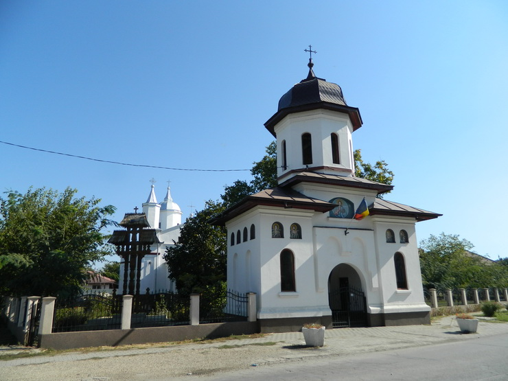
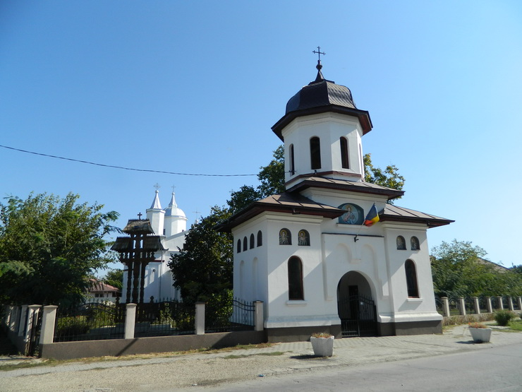

Atracții turistice în Ialomița
Mănăstirea Balaciu
Mănăstirea Balaciu, situată în comuna Balaciu, județul Ialomița, este un important așezământ monahal ortodox. Biserica principală, cu hramul „Adormirea Maicii Domnului”, a fost construită între 1821 și 1841 de boierii Neacșu și Ecaterina Piteșteanu pe moșia lor. După ce satul a fost mutat din cauza inundațiilor, biserica a rămas izolată. În 1927, episcopul Gherontie Nicolau a inițiat transformarea acesteia în mănăstire de călugări, oficializată în 1929. În perioada comunistă, mănăstirea a fost închisă în 1961, iar călugării au fost alungați. După 1990, mănăstirea a fost redeschisă și restaurată, revenind la viața monahală și spirituală.
Biserica "Sfântul Nicolae" din Grivița
 

Biserica "Sfântul Nicolae" din Grivița, construită în 1835, este un monument istoric de importanță națională (cod LMI: IL-II-m-A-14110). Edificiul a fost ridicat pe locul unei biserici de lemn din 1720, sub patronajul familiei boierești Stirbei. Arhitectura impresionantă combină elemente brâncovenești cu influențe neoclasice. Biserica a jucat un rol important în Răscoala din 1907, servind ca punct de adunare pentru revoluționari. În interior se păstrează icoane originale din secolul al XIX-lea și un iconostas sculptat în lemn de stejar. Clopotnița separată, construită în 1850, adăpostește trei clopote istorice, cel mai mare turnat în 1842 la București.
Ruinele Bisericii Sălcioara
Ruinele Bisericii "Adormirea Maicii Domnului" din Sălcioara datează din prima jumătate a secolului al XIX-lea (circa 1830) și reprezintă un important monument al arhitecturii religioase de tip brâncovenesc din regiune. Biserica a fost abandonată în 1940 din cauza mutării satului și a degradării progresive. Structura păstrează ziduri impunătoare de piatră și cărămidă, cu arcade originale și elemente decorative sculptate în piatră. Pe locul altarului se află o cruce memorială ridicată în 2005 de către comunitatea locală. Situl este inclus în Lista Monumentelor Istorice sub codul LMI: IL-II-m-B-14168 și reprezintă un punct de interes pentru cercetătorii de arhitectură istorică.
Rezervația Naturală a Bărăganului
Câmpia Bărăganului, situată în sud-estul României, este cunoscută pentru solul său negru, bogat în humus, favorabil agriculturii. Climatul aspru, cu veri fierbinți și uscate și ierni geroase cu vânturi puternice, a contribuit la dezvoltarea unei vegetații de stepă specifică. În această regiune se află Pădurea Ciornuleasa, o rezervație naturală forestieră și cinegetică înființată în 1954, care protejează o pădure de tip șleau de câmpie. Aici cresc specii precum stejarul, stejarul brumăriu, carpenul, teiul, cărpinița, frasinul pufos, vișinul turcesc și ulmul. Fauna include iepuri, mistreți, căprioare și fazani, făcând din această pădure o rezervație unică. De asemenea, Lacul Strachina, o arie naturală protejată de 1.050 de hectare, oferă un habitat pentru diverse specii de pești și păsări, fiind un loc de atracție pentru pescari și iubitorii de natură.
Rezervația Naturală "Lacul Fundata"
Lacul Fundata, situat la 3 km nord de orașul Fetești, este o rezervație naturală de 115 hectare inclusă în Lista Roșie a ariilor protejate din România. Acest lac natural de lunca inundabilă a Dunării adăpostește peste 150 de specii de păsări migratoare, inclusiv câteva specii protejate la nivel european. Aici pot fi observate: cormoranul mic, stârcul galben, egreta albă mică și lișița. Vegetația specifică include stufărișuri extinse și pajiști inundabile. Lacul este un loc ideal pentru observarea păsărilor, având o platformă special amenajată pentru birdwatching. Din 2005, zona face parte din Rețeaua Natura 2000 ca Sit de Importanță Comunitară (ROSCI0065).
Lacul Amara

Lacul Amara, situat în partea de sud a județului Ialomița, este unul dintre cele mai importante lacuri sărate din România. Acest lac natural, cu o suprafață de 130 de hectare, este cunoscut pentru apele sale sărate și bogate în minerale, precum și pentru nămolul terapeutic. Apa lacului conține concentrații ridicate de cloruri, sulfați și bicarbonați, ceea ce îi conferă proprietăți curative recunoscute oficial. Stațiunea balneară Amara, înființată în 1936, utilizează aceste resurse naturale în tratamente pentru afecțiuni reumatice, dermatologice și ginecologice. Lacul este și un important habitat pentru păsări acvatice, fiind inclus în Rețeaua Natura 2000 ca zonă de protecție specială avifaunistică. Forma lacului, asemănătoare literei S, este rezultatul proceselor geologice care au modelat Câmpia Română. În prezent, lacul atrage atât turiști în căutare de tratamente, cât și iubitori ai naturii interesați de observarea păsărilor și a peisajului unic.
Festivalul Tradițiilor de Vară
Festivalul Internațional de Folclor „Floare de pe Bărăgan” este un eveniment cultural de prestigiu, desfășurat anual în județul Ialomița, România, de obicei în perioada iunie-iulie, în cadrul Zilelor Sloboziei. Acest festival reunește ansambluri folclorice din diverse țări, promovând tradițiile și obiceiurile populare prin cântece și dansuri autentice. Participanții își prezintă costumele tradiționale și oferă spectacole care evidențiază patrimoniul cultural al regiunilor lor. Festivalul include parade ale portului popular pe străzile orașelor și comunelor ialomițene, spectacole în aer liber și schimburi culturale între artiști. Prin intermediul acestui eveniment, județul Ialomița devine un punct de întâlnire al culturilor, contribuind la păstrarea și promovarea diversității folclorice la nivel internațional.
Festivalul Freeland Slobozia


Festivalul Freeland din Slobozia, ediția 2025, este un eveniment muzical și cultural de amploare ce va avea loc în Pădurea Peri între 11-13 iulie. Accesul este gratuit în intervalul 16:00-02:00 (vineri) și 12:00-02:00 (sâmbătă și duminică). Evenimentul se remarcă prin concerte extraordinare, instalații artistice inovatoare, proiecții de lumină spectaculoase și zone tematice interactive. Festivalul promovează nu doar muzica, ci și conexiunea umană și angajamentul față de mediu, fiind recunoscut pentru inițiativele sale sociale și parteneriatele valoroase. Minorii sub 16 ani pot participa doar însoțiți de adulți. Freeland Festival evoluează constant, aducând în fiecare ediție inovații și surprize care îl transformă într-o experiență unică în județul Ialomița :cite[10].
Festivalul Vlah Spirit
Festivalul Vlah Spirit este o celebrare autentică a tradițiilor și culturii vlahe din județul Ialomița. Desfășurat anual în luna august, evenimentul reunește comunități vlahe din întreaga regiune pentru a-și prezenta bogata moștenire culturală. Vizitatorii pot descoperi muzică și dans tradițional, costume populare unice și meșteșuguri specifice. Festivalul include ateliere interactive unde meșterii populari împărtășesc tehnici tradiționale de prelucrare a lemnului, ceramicii și textilelor. De asemenea, se organizează degustări de bucătărie tradițională vlahă, cu preparate precum "ciorbă de lobodă" și "plăcinte vlahești". Evenimentul reprezintă o oportunitate unică de a explora identitatea culturală a acestei comunități tradiționale din județul Ialomița, contribuind la păstrarea și promovarea patrimoniului cultural imaterial.